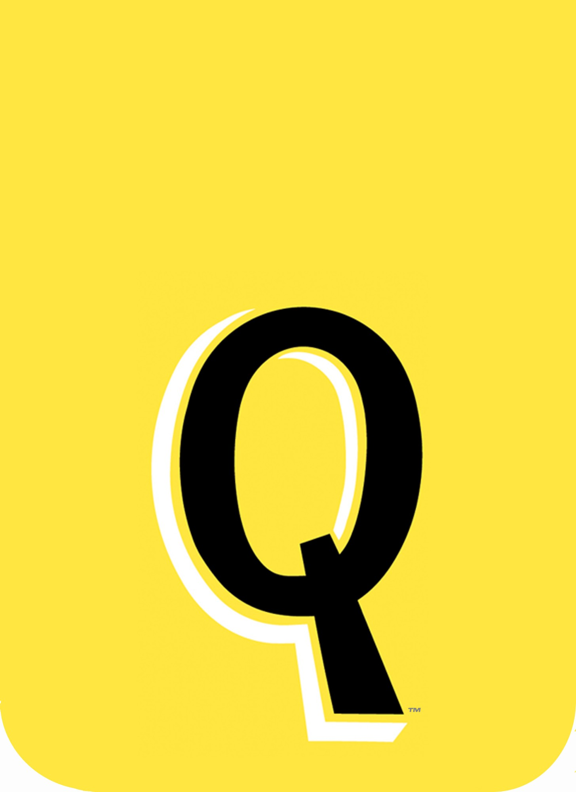

Real Estate
GBX™~Gowanus Bay Terminal
BBX™~Barbadoes Basin Terminal
VBX™~Vernam Basin Terminal
All terminals
Operations
Quadro▪cem™ aka NYCEMCO · Cement
Quadrozzi™Concrete
Quadro▪salt™ · Rock salt
Quadrozzi™Studios
Quadro▪trax™ · Transportation
Design
Quadrozzi™disegno
Recreational
Be™•Brooklyn equine™ ↗
(opens in a new tab)
PPS▪Prospect Park Stable™
Not-for-profit
hhi™•helpinghoof initiative •501(c)(3)
In the News
“We don’t mean business, we make it.”
Contact us